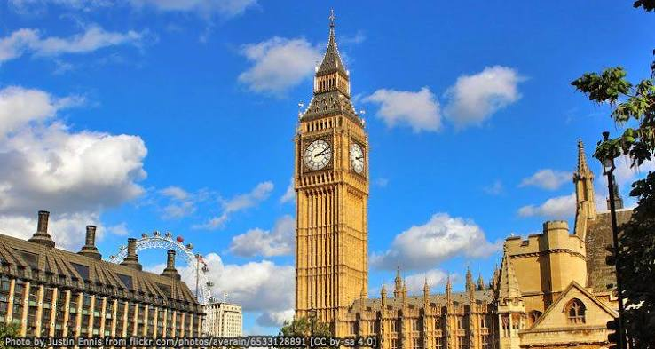

อันดับที่ 3: ศูนย์กลางทางธุรกิจ ศิลปะ แฟชั่น วัฒนธรรม และอาหารแบบอังกฤษที่ผสมผสานความคลาสสิกกับความร่วมสมัย
ลอนดอน (London)


สหราชอาณาจักร
- สถานที่ / กิจกรรมแนะนำชมสถาปัตยกรรมของพระราชวังบักกิงแฮม ชมการแสดงที่ Royal Opera House และอัปเดตแฟชั่นบนถนนอ็อกซฟอร์ด
- อาหารจิบชายามบ่ายพร้อมครีมที่ห้างแฮรอดส์ และลิ้มลองฟิชแอนด์ชิพต้นตำรับ
- สถานที่ต้องแวะเพิ่มเติมหอนาฬิกาบิ๊กเบน (Big Ben) และอาคารรัฐสภา (Houses of Parliament) แลนด์มาร์กสำคัญริมแม่น้ำเทมส์ ลอนดอนอาย (London Eye) ชิงช้าสวรรค์ขนาดใหญ่สำหรับชมทัศนียภาพเมืองแบบ 360 องศา และพิพิธภัณฑ์ระดับโลกที่เข้าชมฟรี เช่น British Museum, Natural History Museum หรือ National Gallery
- ประสบการณ์แนะนำเดินเล่นย่านสีสันสดใสที่ Notting Hill หรือตามหาของกินท้องถิ่นและงานคราฟต์ที่ตลาด Borough Market
- ช่วงเวลาที่น่าเที่ยวช่วงพฤษภาคม – กันยายน อากาศอบอุ่น ช่วงเวลากลางวันยาวนาน และมีเทศกาลกลางแจ้งมากมาย